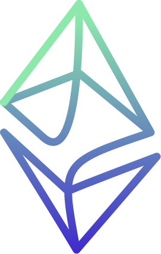

QuickstartsSend a Cross-Chain Call
ENCODE — ORDINARY CALLDATA
abi.encodeCall(IRemote.balanceOf, (user))
selector
70
a0
82
31
arg: user
00
⋯
user
20 address bytes, zero-padded to 32
No cross-chain-specific ABI — this is calldata for any contract call.
DAPP DEVELOPERS
How to call a contract on another rollup
The Quickstart used a call's return value in card 00 and card 02, through a plain call to increment(). This card is the read-only variant: send it as a staticcall so it resolves a static entry, then decode the answer and branch on it.
You send it to the proxy address, and the proxy's fallback catches everything. Send it as a staticcall and the answer comes back as return data you decode and branch on, inside the same transaction.
WHAT YOU'LL LEARN
- 01 · ENCODE IT LIKE ANY CALLA normal call, encoded with no cross-chain-specific ABI.
- 02 · STATICCALL FOR READSYour frame picks the path: a staticcall resolves a static entry, a plain call an execution entry. Use staticcall for reads, so the entry is read-only.
- 03 · DECODE IT AND BRANCHWhat comes back is a value, not a receipt — decode it and let it decide what the transaction does.
RUN IT YOURSELF · forge test --match-test test_theBranchTracksTheValueNotTheSuccessFlag -vv — from eez-demos/snippets, Foundry only.
Verified against eez-core-protocol Git commit 9a1f815; interfaces may move.